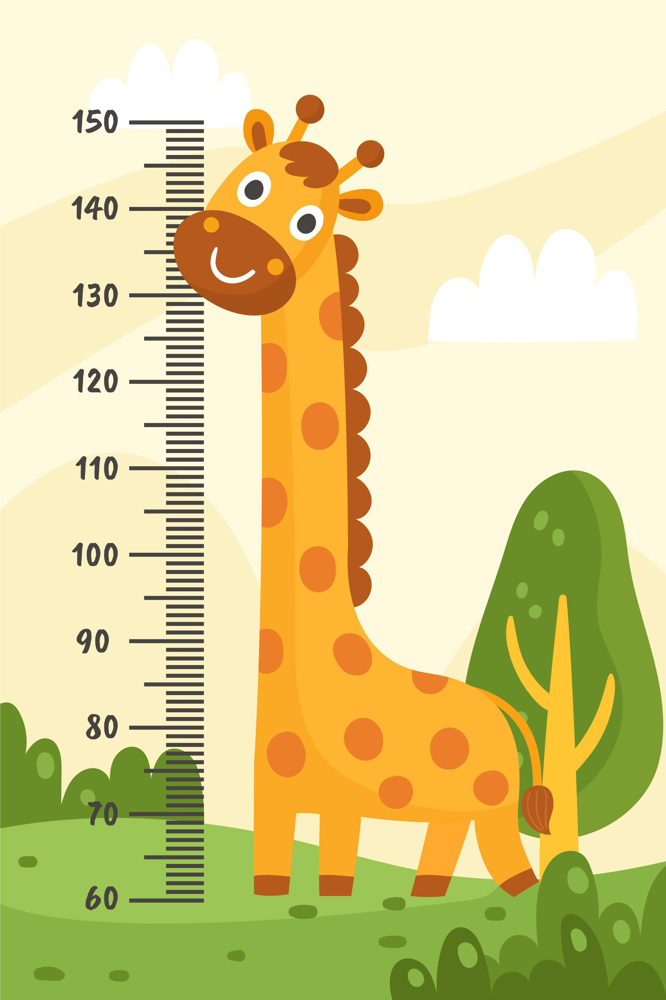
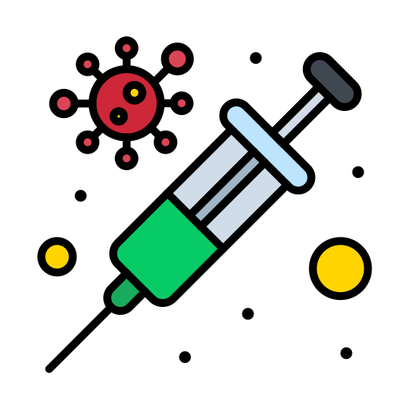
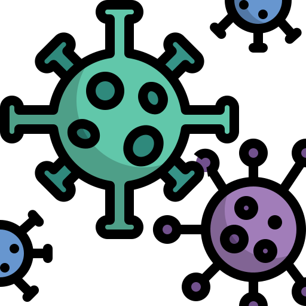
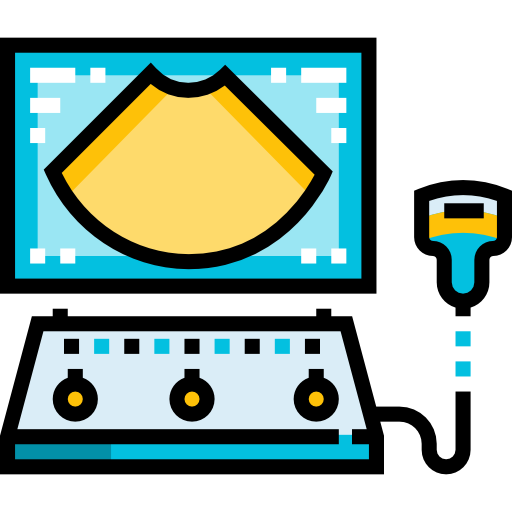

Servicios
 Control de Crecimiento
Programa integral para monitorear el crecimiento y desarrollo de los niños.
- Evaluaciones de peso y altura
- Análisis de desarrollo motor y cognitivo
- Orientación nutricional personalizada
- Consejería para padres sobre el desarrollo infantil
 Vacunación
Gestión de un programa de vacunación completo para garantizar la inmunización adecuada.
- Vacunas rutinarias según calendario nacional
- Registro y seguimiento de vacunas
- Charlas informativas para padres
- Asesoría sobre vacunas adicionales
 Manejo de Enfermedades Comunes
Atención especializada para el diagnóstico y tratamiento de enfermedades comunes en la infancia.
- Tratamiento de infecciones respiratorias
- Atención a enfermedades gastrointestinales
- Manejo de alergias y asma
- Consejería para el cuidado preventivo
 Diagnósticos por Imágenes
Servicios de diagnóstico por imágenes para evaluar la salud de los niños.
- Ultrasonidos para evaluación abdominal
- Radiografías para lesiones y fracturas
- Tomografías computarizadas (TC) según necesidad
- Interpretación de estudios por especialistas
Salud Mental Infantil
Apoyo psicológico especializado para el bienestar emocional y conductual de los niños.
- Evaluación del desarrollo emocional y social
- Terapias individuales y familiares
- Intervención temprana en trastornos como ansiedad, TDAH o depresión
- Talleres para fortalecer habilidades socioemocionales
Consultas Generales
Atención médica integral para abordar diversas necesidades de salud en niños.
- Revisión de la salud general del niño, incluyendo historia clínica y examen físico.
- Consejos sobre nutrición, vacunación y prevención de enfermedades.
- Diagnóstico y tratamiento de afecciones frecuentes como resfriados, gripe, alergias y problemas gastrointestinales.